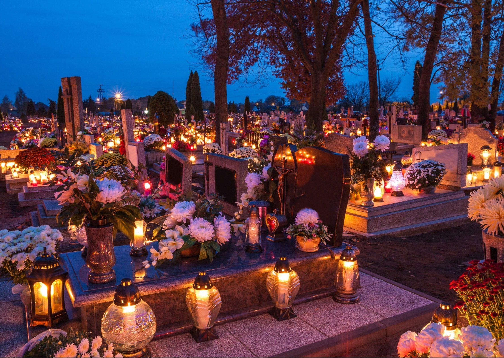

Dzien pamieci o zmarlych
Wszystkich Swietych obchodzimy 1 listopada. Jest to dzien, w ktorym wspominamy wszystkich swietych oraz odwiedzamy groby naszych bliskich.
W tym dniu wiele osob odwiedza cmentarze, zapala znicze i sklada kwiaty na grobach. Jest to czas zadumy, wspomnien i modlitwy.
Swieto przypomina nam o osobach, ktore odeszly. Jest okazja do wspominania rodziny i przyjaciol oraz okazania im szacunku.
Dzien Zaduszny obchodzony jest 2 listopada i jest poswiecony modlitwie za zmarlych.

Dzien pamieci, refleksji i wspomnien.
Autor: Jan Kowalski | 2026